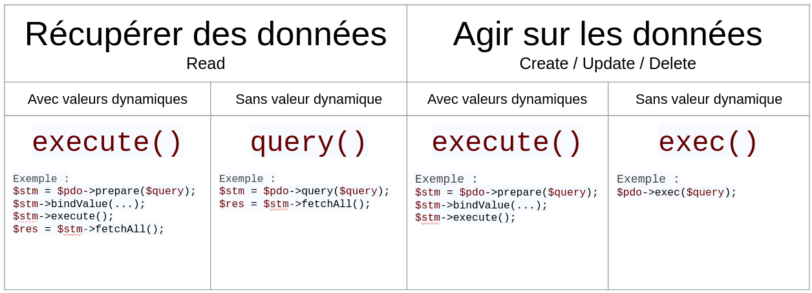

PDO, un ami pour la vie.
Introduction
Pour le moment, tu as appris à utiliser des bases de données via le langage SQL dans le terminal, ou éventuellement via une interface graphique dédiée comme MySQL Workbench. Cependant, maintenant que tu es un peu plus à l'aise avec PHP, tu vas vouloir utiliser des bases de données directement dans le langage. Cette quête va te montrer comment faire !

🤓 À la fin de cette quête, tu seras capable de :
- ✅ Te connecter à une base de données
- ✅ Effectuer des requêtes avec PHP
- ✅ Te prémunir des injections SQL
- ✅ Récupérer des données avec PHP
Mysqli vs PDO
Il existe deux bibliothèques principales en PHP pour se connecter à une base de données.
-
Mysqli, qui est simple et possède une approche majoritairement procédurale (même si un pendant “objet” existe également). Celle-ci est de moins en moins utilisée car elle est spécifique à MySQL et il est donc compliqué de migrer un projet l'utilisant vers un autre SGBD par la suite.
-
PDO pour PHP Data Objects, qui est une bibliothèque avec une approche uniquement orientée objet et qui apporte une couche d'abstraction supplémentaire, car elle permet de se connecter à tous types de SGBD, avec une syntaxe similaire. Cette fois-ci, changer de SGBD en cours de projet peut se faire relativement sans effort. Cette quête ne développera que PDO.
Connexion à une base de données via PDO
Syntaxe
Pour se connecter à une base de données, tu as besoin de quatre informations :
- le nom d'utilisateur pour se connecter à la base de données
- le mot de passe pour se connecter à la base de données
- le nom de l'hôte (dans la grande majorité des cas, ce sera localhost, car dans la plupart des projets, la base de données est hébergée sur la même machine que le serveur HTTP. Dans le cas contraire, il faudra modifier par l'adresse IP de la machine hébergeant la DB.
- le nom de la base de données sur laquelle tu souhaites te connecter.
Dans le terminal (pour MySQL), cela revient à faire :
mysql -u wilder_username -D database_name -h localhost -p
Rappel
L'option -h est ici facultative car la valeur localhost est celle par défaut.
Avec PDO, tu devras initialiser une connexion au début de ton code PHP (avant d'effectuer la moindre requête SQL), selon la syntaxe suivante :
<?php
$pdo = new \PDO('mysql:host=localhost;dbname=database_name', 'wilder_username', 'wilder_password');
Selon ton système d’exploitation ou ton installation initiale de tes outils, si tu as une erreur de "driver" il faudra installer l'utilitaire qui permet de faire le pont entre php et mysql. Pour l'installer il faudra taper dans le terminal : sudo apt-get install php-mysql
Pour commencer, tu dois instancier un objet de type \PDO via le mot-clé new. Ensuite, cet objet PDO va prendre trois paramètres (tous trois des chaînes de caractères) :
- Le premier est le DSN (Domain Server Name) qui permet d'identifier le SGBD et le nom de la base de données à laquelle on souhaite se connecter. C'est ici (et seulement ici) que tu précises que tu souhaites te connecter à une DB de type MySQL. Si tu souhaites modifier le SGBD par un autre (par ex PostgreSQL, Oracle, Sqlite, etc.) tu n'auras que ce début de ligne à modifier. Ensuite, le DSN comporte le nom d'hôte (ici localhost), puis après un point-virgule, le nom de la base de données ciblée. La syntaxe est un peu inhabituelle mais il n'y a rien de très compliqué.
- Le second paramètre attendu est le nom d'utilisateur de la base de données
- Le troisième paramètre est le mot de passe de la base de données.
Astuce
À la place de localhost, tu peux saisir un nom de domaine ou une adresse IP. D’ailleurs, il arrive parfois que sur Mac, tu sois obligé de passer par 127.0.0.1 au lieu de localhost.
La connexion à la base de données est donc un objet PDO qui est ici stocké dans la variable $pdo.
Astuce
Si tu rencontres des problèmes avec certains types de caractères (accents, cédille…) c’est que PDO n’arrive pas à traiter l'encodage UTF8. Dans ce cas, ajoute ;charset=utf8 à la fin de ton DSN, qui devrait donc ressembler à : mysql:host=localhost;dbname=database_name;charset=utf8
Un peu de confidentialité
Pour la connexion via le terminal, tu utilisais l'option -p, qui permettait de demander le mot de passe une fois la touche "entrée" appuyée, afin que ce dernier n'apparaisse pas en clair. Or ici, voilà que le mot de passe et toutes les données de connexion se retrouvent "en clair" dans le code. Cela entraîne deux problèmes majeurs : Sur la confidentialité, car tout développeur récupérant ce projet verra ton mot de passe, Sur la réutilisabilité du code, car un autre développeur n'aura pas le même nom d'utilisateur, ni le même mot de passe. Il sera donc obligé de modifier chaque page de ton code où tu effectues une connexion à la base de données, et il dévoilerait par la même occasion son propre mot de passe...
La solution est donc d'enregistrer les informations propres à la connexion dans un autre fichier, que tu viendras ensuite inclure dans les pages nécessitant une connexion. Pour être sûr de pouvoir accéder à ces données, tu vas les stocker non dans des variables, mais dans des constantes. Comme leur nom l’indique, les constantes ne peuvent pas être modifiées une fois définies. De plus, elles ont une portée globale, c’est-à-dire que tu pourras les utiliser n'importe où dans ton code, même au sein de fonctions. Pour ce faire, crée un fichier _connec.php qui contiendra le code suivant :
<?php
define('DSN', 'mysql:host=localhost;dbname=database_name');
define('USER', 'wilder_username');
define('PASS', 'wilder_password');
C'est la fonction define() qui permet de créer une constante, avec son nom en premier paramètre (en majuscule par convention) et sa valeur en second paramètre. Ensuite, pour pouvoir appeler ces constantes (qui n'utilisent pas le dollar comme des variables classiques), il faut inclure le fichier en début des scripts qui en auront besoin :
<?php
require_once '_connec.php';
$pdo = new \PDO(DSN, USER, PASS);
Enfin, pour que les informations confidentielles contenues dans _connec.php ne soient pas diffusées partout, il faudra penser à NE PAS VERSIONNER ce fichier, en le rajoutant simplement au fichier .gitignore.
Les constantes DSN, USER et PASS ne sont pas figées, tu peux utiliser d’autres noms pour ces constantes. Il faut juste qu’elles soient appelées de la même manière lors de l’instanciation de ton objet PDO.
Effectuer une requête simple
Maintenant que tu sais te connecter avec PDO, tu vas voir comment effectuer une requête simple.
Commence par charger ce fichier SQL. Il va créer une base de données appelée pdo_quest qui possède une unique table friend, contenant les champs id, firstname et lastname, ainsi que quelques valeurs.
mysql -u username -p < friends.sql
Une fois le fichier chargé, modifie le nom de la database en `pdo_quest` dans le fichier _connec.php. Tu vas ensuite effectuer une première requête pour récupérer tous les enregistrements.
<?php
// A exécuter afin d'afficher vos lignes déjà insérées dans la table friends
$query = "SELECT * FROM friend";
$statement = $pdo->query($query);
$friends = $statement->fetchAll();
La méthode query() de l'objet PDO (préalablement instancié et stocké dans la variable $pdo) permet d'exécuter une requête qui renvoie des résultats. La méthode retourne un objet de type PDOStatement (c'est pour cela que la variable a été nommée $statement). Ce nouvel objet possède lui-même plusieurs méthodes (dont fetchAll() utilisée ici) permettant de récupérer les données sous différents formats. Ce point sera détaillé plus loin dans la quête.
Tu viens de voir le cas d'une requête SELECT qui renvoie effectivement un résultat, mais qu'en est-il des requêtes INSERT, UPDATE, DELETE, etc. qui ne renvoient rien ? Dans ce cas, ce n'est plus query() que tu devras utiliser, mais la méthode exec()
<?php
// A exécuter afin d'insérer une ligne dans votre table friends
$query = "INSERT INTO friend (firstname, lastname) VALUES ('Chandler', 'Bing')";
$statement = $pdo->exec($query);

Injections SQL
Ne fais jamais, JAMAIS, confiance à une donnée provenant d'un utilisateur (paramètre de query string, donnée d'un formulaire, etc.)
JAMAIS !
Que ce soit volontaire ou non, les données saisies par l'utilisateur sont potentiellement malveillantes ou sujettes à la création de bugs. Tu n'as pas la maîtrise dessus, tu dois donc t'assurer par un traitement spécifique qu'elles ne pourront pas nuire à ton site. Ici, c'est le cas de l'injection SQL qui va être développé, c'est-à-dire une donnée utilisateur qui va venir s'insérer dans une requête SQL pour en changer le comportement initial.
Par exemple, si tu as un formulaire permettant de créer un nouveau friend, avec un champ "firstname" et un champ lastname, ta requête devrait ressembler à :
<?php
// Ne pas exécuter, mais comprendre ce que fait ce bout de code.
// Ceci est à titre d'exemple
// On récupère les informations saisies précédemment dans un formulaire
$firstname = trim($_POST['firstname']);
$lastname = trim($_POST['lastname']);
// On exécute notre requête d'insertion
$query = "INSERT INTO friend (firstname, lastname) VALUES ('$firstname', '$lastname')";
$pdo->exec($query);

Si l'utilisateur saisit "Rachel" et "Green" dans les champs du formulaire, tu obtiendras la requête :
<?php
// Ne pas exécuter
// Cette requête est à titre d'exemple
$query = "INSERT INTO friend (firstname, lastname) VALUES ('Rachel', 'Green')";
Aucun problème ! Maintenant, si un utilisateur malveillant saisit "Rachel" en prénom, et "');TRUNCATE TABLE friend;" en nom, tu obtiendras alors la requête

<?php
// Ne pas exécuter
// Cette requête est à titre d'exemple
$query = "INSERT INTO friend (firstname, lastname) VALUES ('Rachel', '');TRUNCATE TABLE friend;')";
Du code SQL potentiellement destructeur vient d'être injecté et, dans ce cas, vient de supprimer toutes les données de la table (mais cela aurait pu tout aussi bien récupérer une liste de mots de passe, supprimer toute la base de données, ou effectuer toute autre requête à ton insu !). Tu comprends donc l'importance absolue de se prémunir des injections sur absolument toutes tes requêtes SQL pouvant contenir des informations provenant d'un utilisateur. En tant que développeur, tu manipules des données sensibles appartenant à d’éventuels clients, et c’est donc ta responsabilité de t’assurer que les données stockées dans ta base sont convenablement protégées.

Requêtes préparées
Pour se protéger contre ces injections, la solution est d'échapper tous les caractères qui pourraient venir modifier une requête SQL : quote, parenthèse, point-virgule, etc. Pour cela, il est possible d'utiliser des fonctions PHP dédiées comme mysql_real_escape_string(), qui vont ajouter par exemple un antislash devant les caractères potentiellement dangereux, les rendant ainsi “inoffensifs”.
Ceci est assez fastidieux car il ne faut rien oublier. PDO apporte ici une solution pratique via les requêtes préparées. Ces requêtes sont à utiliser systématiquement dès qu'une donnée provenant de l'utilisateur fait partie de la requête SQL. Une requête préparée va alors automatiquement s'occuper d'échapper les caractères problématiques. Et voilà, c'est sécurisé !
Comment ça marche ? Tout d'abord, tu vas signaler à PDO qu'il travaille avec une requête préparée via la méthode prepare(). Ensuite, ce qu'il faut comprendre, c'est qu'une requête préparée n'est qu'un "moule" qui va servir à créer des requêtes SQL. Ce moule contient des valeurs "à remplir" qui sont appelées des placeholders. Il va donc falloir indiquer à la requête préparée quelles valeurs mettre dans chaque placeholder défini. Ce sont ces placeholders qui seront automatiquement échappés pour éviter les injections.
Donc si l'on reprend l'exemple précédent en le transformant avec une requête préparée :
<?php
// Ne pas exécuter, mais comprendre ce que fait ce bout de code.
// Ceci est à titre d'exemple
// On récupère les informations saisies précédemment dans un formulaire
$firstname = trim($_POST['firstname']);
$lastname = trim($_POST['lastname']);
// On prépare notre requête d'insertion
$query = 'INSERT INTO friend (firstname, lastname) VALUES (:firstname, :lastname)';
$statement = $pdo->prepare($query);
// On lie les valeurs saisies dans le formulaire à nos placeholders
$statement->bindValue(':firstname', $firstname, \PDO::PARAM_STR);
$statement->bindValue(':lastname', $lastname, \PDO::PARAM_STR);
$statement->execute();
Dans l'exemple ci-dessus, les placeholders sont :firstname et :lastname. Comme tu peux le constater, tu ne dois pas mettre de quote autour du placeholder dans la requête préparée, et ce même si la valeur finale est un string.
La méthode prepare() retourne à son tour un objet PDOStatement sur lequel tu vas pouvoir utiliser la méthode bindValue() qui permet de relier un placeholder avec une valeur, ici par exemple $lastname. La méthode prend un troisième paramètre optionnel (une constante de la classe PDO) permettant de restreindre le type de la valeur qui va venir prendre la place du placeholder (par exemple uniquement un string, ou un integer...).
Ici, la requête préparée possède deux placeholders. Il faut donc utiliser deux fois bindValue().
Ensuite, pour exécuter la requête préparée, il faut utiliser la méthode execute() de l'objet PDOStatement (à ne pas confondre avec la méthode exec() de PDO).
Remarque
L'autre intérêt des requêtes préparées consiste en une amélioration des performances, si la requête doit être effectuée plusieurs fois. C’est la structure de la requête qui va être optimisée, et ce même si la valeur des placeholders change à chaque fois.
Plus d'excuse donc, pour ne pas utiliser de requêtes préparées ! Cependant, si tu as à effectuer une requête unique qui ne nécessite pas de données provenant de l'utilisateur, utilise plutôt les méthodes query() ou exec() qui sont alors faites pour ça.

Remarque
Tes requêtes préparées sont protégées des injections SQL. Cependant, il faudra également penser systématiquement à vérifier que le format des données (type, longueur, etc.) correspond bien au format défini dans ta base de données, au risque d'avoir des erreurs ou des données corrompues. Les requêtes préparées ne s’occupent pas de cette validation des données qui est également indispensable !
Récupération des données
Dans cette partie, tu vas voir plus en détail les différents moyens mis à ta disposition par PDO pour récupérer les données d'une requête (préparée ou non).
Pour cela, il existe deux méthodes principales que sont fetch() et fetchAll() qui s'utilisent toutes deux sur des objets de type PDOStatement.
fetch()permet de récupérer un seul résultat. Utile si tu sais que ta requête ne doit renvoyer qu'une seule et unique ligne. Dans le cas contraire, tu peux tout de même utiliser fetch() mais tu n'obtiendras uniquement que les résultats du premier enregistrement.fetchAll()retourne tous les résultats de la requête, sous la forme d'un tableau avec une ligne par enregistrement.
Que ce soit pour fetch() ou pour fetchAll(), il est possible de choisir le format sous lequel tu souhaites récupérer ces "enregistrements" provenant de la base de données. Pour cela, il faut utiliser des paramètres appelés des "fetch styles" comme listé en ressource. Les plus usuels sont :
-
FETCH_BOTH : c'est la valeur par défaut si tu n'indiques rien. Le format de sortie est un peu particulier, car sous la forme d'un double tableau indexé numériquement ET associatif (les valeurs y sont donc répétées deux fois chacune).
php<?php // A exécuter afin de tester le contenu de votre table friend $query = "SELECT * FROM friend"; $statement = $pdo->query($query); $friends = $statement->fetchAll(PDO::FETCH_BOTH); // same as $statement->fetchAll() var_dump($friends);Voici le résultat de
var_dump($friends):phparray (size=5) 0 => array (size=6) 'id' => string '1' (length=1) 0 => string '1' (length=1) 'firstname' => string 'Ross' (length=4) 1 => string 'Ross' (length=4) 'lastname' => string 'Geller' (length=6) 2 => string 'Geller' (length=6) 1 => array (size=6) 'id' => string '2' (length=1) 0 => string '2' (length=1) 'firstname' => string 'Monica' (length=6) 1 => string 'Monica' (length=6) 'lastname' => string 'Geller' (length=6) 2 => string 'Geller' (length=6) 2 => [...]tandis qu'un simple
fetch()aurait renvoyé uniquement le premier enregistrement :phparray (size=6) 'id' => string '1' (length=1) 0 => string '1' (length=1) 'firstname' => string 'Ross' (length=4) 1 => string 'Ross' (length=4) 'lastname' => string 'Geller' (length=6) 2 => string 'Geller' (length=6) -
FETCH_ASSOC : Dans la plupart des cas, tu souhaiteras traiter ton tableau uniquement comme un tableau associatif, avec les noms de champ en clés et les données en valeurs. C'est ce que propose ce style de fetch

- FETCH_NUM : renvoie un tableau indexé numériquement (dans ce cas, le nom du champ n'est donc pas retourné). Le FETCH_BOTH est donc la combinaison de FETCH_ASSOC et FETCH_NUM.
- FETCH_OBJ : renvoie un tableau d'objets. Ainsi, il sera possible d'accéder aux champs de chaque élément avec une syntaxe objet de cette manière là :
$data[0]->firstname - FETCH_CLASS : ce style est également très utile, car il permet de transformer les résultats directement en objet d'une classe prédéterminée. Il sera très utile pour une approche "tout objet" du code.
Une fois les valeurs de la requête récupérées via un fetchAll(), tu n'as plus qu'à boucler dessus pour manipuler les données une à une :
<?php
// A exécuter afin de tester le contenu de votre table friend
$query = "SELECT * FROM friend";
$statement = $pdo->query($query);
// On veut afficher notre résultat via un tableau associatif (PDO::FETCH_ASSOC)
$friendsArray = $statement->fetchAll(PDO::FETCH_ASSOC);
foreach($friendsArray as $friend) {
echo $friend['firstname'] . ' ' . $friend['lastname'];
}
// On veut afficher notre résultat via un tableau d'objets (PDO::FETCH_OBJ)
$friendsObject = $statement->fetchAll(PDO::FETCH_OBJ);
foreach($friendsObject as $friend) {
echo $friend->firstname . ' ' . $friend->lastname;
}
Voilà, PDO est ton nouveau meilleur ami, qui va te permettre de requêter sur ta base de données de manière sécurisée, et donc interagir avec tes données via PHP.

Récapitulatif

Connexion, requêtes préparées, récupérations avec différents fetch style, le tour complet de PDO est réalisé ici. Certaines notions plus avancées sont également abordées. Fais le tri entre celles qui te sont utiles maintenant et celles que tu n’as pas encore vues, sur lesquelles tu pourras éventuellement revenir plus tard. Un tri efficace de l’information, c’est aussi cela apprendre à apprendre ;-).
En complément de fetch(), cette méthode permet de récupérer le nombre de lignes de résultat d'une requête.
Contrairement à fetch(), cette méthode renvoie toujours un tableau, contenant lui-même d’autres tableaux ou des objets, en fonction du fetch style.
Il y en a beaucoup, la plupart ne servant que dans des cas bien spécifiques. Commence par te focaliser sur les quelques-uns présentés dans la quête.
💪 Challenge
Fais-toi des amis !
Crée une page index.php qui liste les "friends" contenus dans la base, sous la forme d'une liste HTML. Pense à créer un fichier _connec.php que tu n’enverras pas avec ta solution, afin de ne pas dévoiler ton mot de passe.
💡 Tips : sers-toi du fichier
.gitignore
Sous la liste, crée un formulaire simple disposant des champs obligatoires Firstname et Lastname. Lorsque tu soumets le formulaire, un nouveau personnage doit être inséré dans la base de données, via une requête préparée.
Poste ta solution.
Bonus :
- Tu peux effectuer des validations afin de t'assurer que les noms et prénoms ne soient pas vides et fassent moins de 45 caractères (les champs de la table étant des
VARCHAR(45)). - Une fois l'enregistrement effectué, effectue une redirection via l'header() approprié, afin d'éviter de soumettre le formulaire à nouveau (et donc de créer un doublon) si tu réactualises la page.
Critères de validation
- Le fichier index.php est bien présent
- La connexion à la base de données est correctement configurée avec PDO (tu peux réutiliser le même fichier _connec.php que tu as créé pour réaliser cette quête).
- La page affiche la liste des friends contenus dans ta propre base de données.
- La page affiche un formulaire d'ajout de friend. Lorsque tu soumets le formulaire, un nouveau friend apparaît dans la liste.
- La requête d’insertion est une requête préparée.
Ressources partagées sur cette quête
- une arborescence des méthodes https://www.php.net/manual/fr/class.pdostatement.php